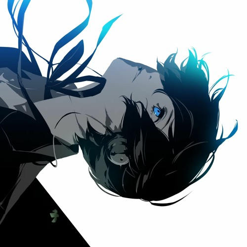

Color Your Night
Lotus Juice & Azumi Takahashi
original song
favourite cover
Time to shine and I'm down to ride
I'm gonna drive until the break of dawn, wilding out
I'm on a mission grinding out
whatever it is I gotta do
Riding out until the day I meet you, I'm riding out
I look up in the sky (sky)
Asking lotta, why? (Why?)
But never let it phase me, I'm keeping good vibes
When I'm on the road, watch out for all surprises
What it provides us Good and bad but nothing unties us
Another wander in the night
Let me paint the view
Color a town with my light
For every moment shared with you
Not out in the day
But never fully gone
Going to be back again
Until the coming of a dawn
for all the days ahead of us put your hands up
Wave 'em side to side for good luck, ah
(Hey) for all the nights like this, put your hands up
Love the moment even from dusk, yup
(Hey) you always got my back, and of course I got your back
Don't you worry about that now
(Hey) it's been a good day, good night
It's gonna be a good day, good night
Two hands meet at zenith
Nothing comes between us
Dancing like ballerinas
Under, the moonlight all night long
How these plain and simple scenes
Get painted so vividly by you
I just wanna stay with you
Around the world I slowly dance
Whenever our eyes meet
You know you leave me in a trance
It means everything to me
Looking down below
The one I seek to find
No matter where you might go
Remember you'll be on my mind
always watching over me somehow you make me feel invincible
Power to my soul, yup (Hey)
I'm at ease with things that used to bother me
'Cause your existence just ights me up, yup
(Hey) you always got my back, and of course I got your back
Don't you worry about that now
(Hey) it's been a good day, good night
It's gonna be a good day, good night
Within the inner heart I plead
For you to talk to me
I wanna hear all the good and bad
The new stories you have
As I drift across the sky
The hour hand turns high
So goodnight
Let me sing a lullaby, love
I'll be seeing you, baby